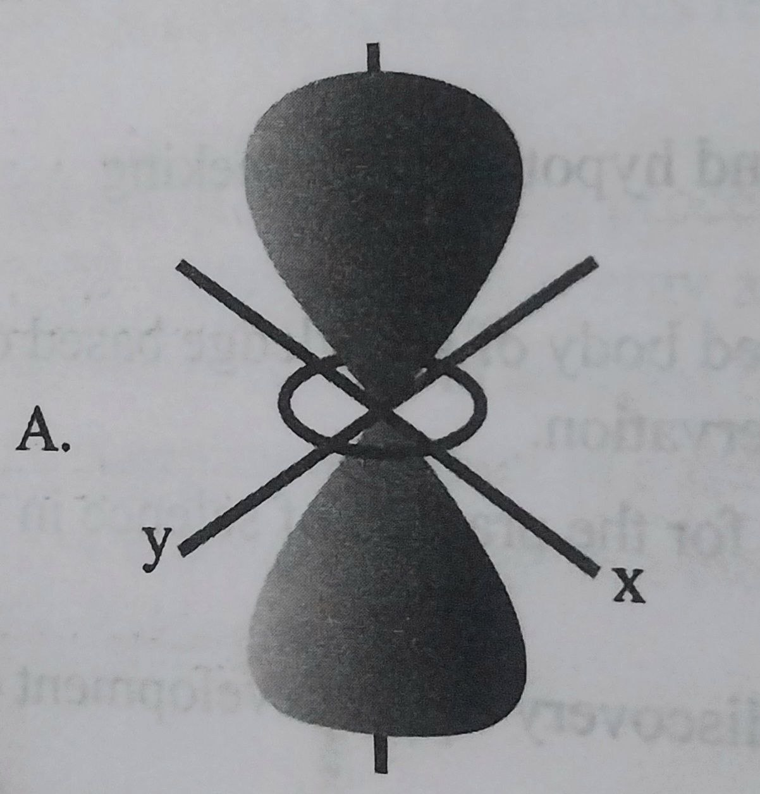
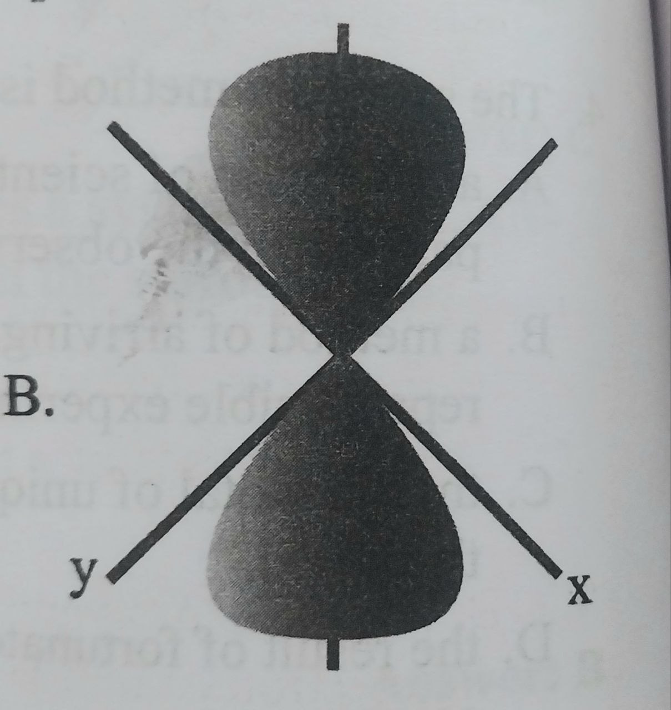
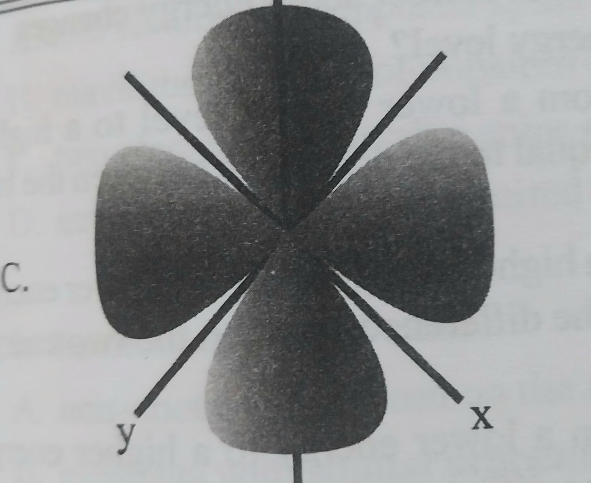
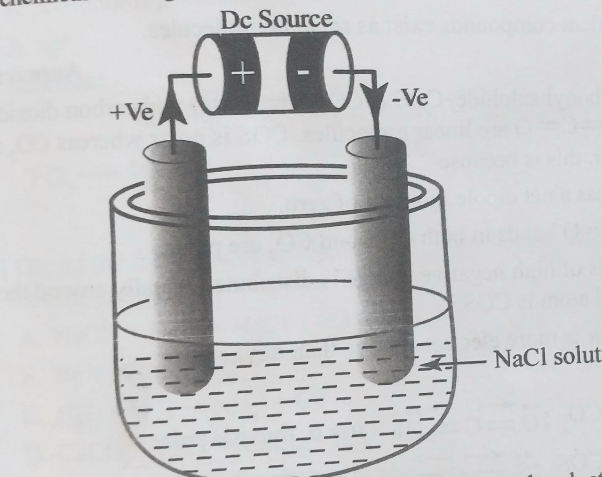
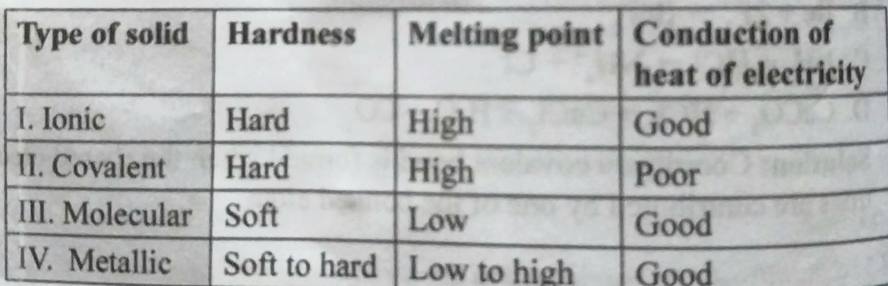
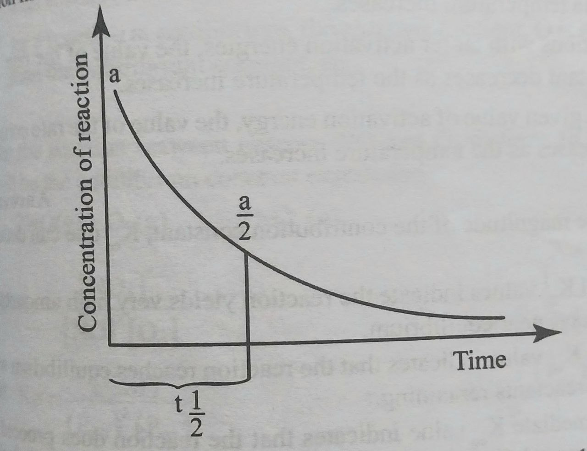
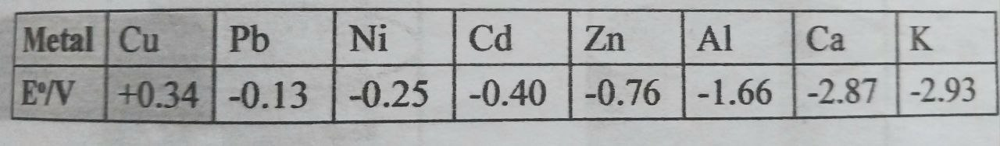

- The branch of chemistry involved in separating, identifying and determining the relative amounts of components in a sample of material is known as A. Biochemistry
- Significant figures are figures with A. measured values with the highest precision.
- For the determination of the density of a new ceramic, a student measured the mass of a piece on an analytical balance and obtained 3.8056 gram and its volume 2.5 mL by displacement of water in a graduated cylinder.The correctly reported density of the ceramic should be A. 1.5222 g/mL
- The scientific method is A. a collection of scientific guesses and hypothesis by seeking patterns in the observation.
- One of the following is NOT the cause of uncertainty in measurement. A. The type of material measured
- Which of the following is true about isotopes? Isotopes of an element have A. the same number of electrons and neutrons.
- The following diagrammatic represenatations shows the shape for various orbitals. Which one represents the dz2 orbitals? A.
- Silver (Z = 27) has several known isotopes, but two occur naturally, 107Ag and 109Ag. Given the following mass spectroscopic data, calculate the atomic mass of Ag.
- Which statement correctly describes Heisenberg’s uncertainty principle? A. If we measure the momentum of a particle precisely then its position will be correspondingly precise.
- Which of the following is correct about energy changes when an electron changes its energy level? A. When an electron jumps from a lower energy level to a higher level, the photon emitted is equal to difference between the two energy levels.
- The sanitizer in wide use for the protection against Covid-19 is labeled 83% alcohol. How can one scientifically check the concentration? This can be done by A. forming a hypothesis
- The correct electron configuration for chromium (Cr, Z = 24) is A.1s22s22p63s23p
- According to Hund’s rule, equal energy (degenerate) orbitals are filled with A. two electrons of opposite spine placed in the first orbital.
- In the modern periodic table, A. non-metals are placed on the right hand side of the periodic table.
- The electrolysis of liquid (molten) NaCl in the set-up for the electrochemical cell is given in the following figure below
- Covalent compounds are liquids or gases at room temperature and have low melting and boiling points. Which of the following statements explain these properties of covalent compounds? A. The intermolecular forces of attraction in covalent compounds are strong.
- Both carbonyl sulphide, COS, S=C=O, and carbon dioxide, CO2, O=C=O, are linear molecules. COS is polar whereas CO2 is non-polar. This is because A. CO2 has a net dipole moment of zero.
- Which of the following statement is true about the formation of CH4 according to valance bond theory? A. The 2s and two 2p orbitals in carbon hybridize to form three sp2 hybrid orbitals.
- Phosphorus (Z = 15) has the electronic configuration 1s22s22p63s23p
3 . What kind of hybridization does phosphorus undergo in the formation of phosphorus pentachloride (PCl5)?
A. Sp - One of the following reaction illustrates the formation of coordinate covalent bond? A. NaOH + HCl → NaCl + H2O
- Hydrogen bonding occurs in compounds that contain H-N, H-O and H-F bonds. These bonds are stronger than the ordinary dipole-dipole interaction because A. the partially positive H of one molecule is attracted to the partially negative lone pairs on the N, O or F another molecule.
- Which of the following is an example of exception to the octet rule? A. NH3
- Which of the following pair is true about the general properties of the different types of crystalline solids?
- When the boiling point of hydrides of group VIA elements, H2O, H2S, H2Se and H2Te are arranged in the order of increasing boiling point.
The trend is H2Te < H2Se < H2S < H2O, water having the highest boiling point, this is due to
A. the small size of O compared to the other group VIA elements. - Given the following catalyzed reactions
I. 2CO2(s) → 2SO3(g); V2O5(s) as a catalyst
II. OCl-(aq) + I-(aq) → OI-(aq) + Cl-(aq); OH-(aq) as inhibitor
III. CO(s) + H2(g) → CH4 + H2O(g); Ni(s) as a catalyst
IV. CO(s) + H2(g) → HCH(g); Cu(s) as a catalyst
Which reaction is an example for homogeneous catalysit?
A. I and II - Which statement is true about catalyst? A. A catalyst slows down or speeds up a reaction, itself being consumed.
- According to the transition state theory A. The collision between two reacting species results in the formation of an activated complex, which has less energy than both reactants and products.
- Which of the following is true about the rate constant? A. it expresses the relationship between the rate of a chemical reaction and the volume of reacting species.
- For a first order reaction, the concentration versus time of the reaction mixture is given by the following graph.
- The mathematical expression k = (Ea/2.3303R)1/T + logA derived from the Arrhenius equation is of important as it shows A. reaction with larger activation energies have higher values of k and are therefore faster.
- From the magnitude of the equilibrium constant, Keq one can deduce that A. Small Keq values indicate the reaction yields very high amounts of products near equilibrium
- The statement ‘if a system at equilibrium is subjected to a stress,the system will adjest itself to reduce the effect of the stress’ is known as A. Faraday’s Law
- The law of mass action states that A. The rate of a reaction is directly proportional to the product of the concentration of reactants raised to thr power of their respective coefficients in the balanced equation
- For the reaction between gaseous NO and O2 to form NO2 gas, what will be the equilibrium constant expression. 2NO(g) + O2(g) → 2NO2(g) A. Kc = [NO2]2/[NO]2[O2]
- The equilibrium constant KP for the reaction 2SO3(g) → 2SO2(g) + O2(g) is 3.8 x 10-3 at 227oC. What is the value of Kc for the reaction at the same temperature? A. 1.8 x 10-3mol m-3
- In the production of NH3 by the Haber process according to the equation N2(g) + 3H2(g) → 2NH3(g) ΔH = -92kJmol-1 what are the favorable condition for the production of high yield of NH3? A. Low pressure and low temperature
- Which one of the following statements describes laboratory and industrial preparation of acetic acid respectively? A. Reduction of toluene bay KMnO4 and reduction of ethanol by sodium dichromate.
- Which of the following is true about carboxylic acids? A. Carboxylic acids have the formula RCOOH.
- What is the IUPAC name for the branched carboxylic acid CH3-CH(Cl)-CH(CH3)- CH(CH3)-COOH? A. 1,2-dimethyl-4-chloro-1-penthanoic acid
- Esters are characterized by the following properties except A. Esters have pleasant odors of perfumes and food flavoring.
- Oils are unsaturated fatty acids. The process of converting oils to solid fats involves? A. Esterification of the acid
- A chemistry teacher has added different reactants and reagents in three different test tubes as described below
I. In test tube A ethanol, sodium dichromate, sulfuric acid
II. In test tube B acetaldehyde, sodium borohydride and water
III. In test tube C methyl acetate, ethanol and sodium hydroxide
In which test tube would a reaction take place that provide acetic acid?
A. III
B. I and II
C. II and III
D. I
- The Ka of acetic acid is 1.8 x 10-5. What is the present ionization of 1M CH3COOH? A. 3.6 B. 1.42 C. 1.34 D. 4.2
- According to the Lewis definition of an acid, an acid is a substance that A. dissociates in water to yield H3O+
- Water is a weak electrolyte, because A. It has a very high ionic product, Kw.
- Which of the following reaction represents the amphoteric behavior of water? A. HCl + H2O → H+ + Cl- and NaOH + H2O → Na+ + OH-
- For an acidic solution, which of the following is correct? A. PH = POH and PH = 1/2PKw =7
- What is the PH of 0.254 M HF solution at 250? Ka for HF is 6.8 x 10- A. 12.1 B. 1.89 C. 12.3 D. 1.741
- One of the following pairs represents examples of buffer systems. A. NaOH/HCl and HNO3/KOH
- The reaction between a week acid and strong base is presented by the reaction between acetic acid and NaOH (CH3COOH + NaOH → Na+ + CH3COO- + H2O) gives a basic solution, because A. Na+ is a strong acid and causes high concentration of H+.
- An acid is a substance that A. has a bitter taste
- One of the following given masses of acids contributes the corresponding equivalent of the acid. A. H2SO4 = 98 g = 2 equivalents
- One of the following pairs shows Bronstd-Lowry acids behavior in water. A. HNO3 and NO3-
- In the reaction mixture of the two NH4OH and NH4Cl NH4OH → NH4+ + OH-, NH4Cl → NH4+ + Cl- A. The NH4+ ion is a spectator in the reaction mixture
- Which of the following is correct about Kw at different temperature? The ionic product of water Kw equals Kw = 1.0 x 10-14 at 250C and Kw = 2.92 x 10-14 at 400C A. Water is dissociated to a higher extent at 400C than at 250C.
- What is reduction? Reduction is A. gain of electrons and increase in oxidation state.
- During the electrolysis of dilute aqueous sulfuric acid, the ions present in solution are H+, OH- and SO42-. Which ions are preferentially discharged at the cathode and anode, respectively? A. Anode = 4OH-(aq) → H2O(l) + O2(g) + 4e-
- Which one of the following is NOT correct about electrodes and electrochemical cells? A. Electrons flow spontaneously from negative to positive electrodes.
- The mathematical equation for Faraday’s first law is summarized as A. N = mIt.MF B. m = MIt/nF C. M = mIt/nF D. m = It/F
- In the electrolysis of copper sulphate solution using graphite electrodes, O2 is liberated at the anode and copper metal is deposited at the cathode. Is the electrolysis of CuSO4 is performed using copper electrode, what happens at the anode and cathode? A. At the anode, copper electrode dissolves and copper metal is deposited at the cathode.
- The statement ‘the amount of a substance consumed or produced in an electrolytic cell is directly proportional to the amount of electricity that pass through the cell’ is known as A. Dalton’s law B. Raoult’s law C. Faraday’s law D. Henry’s law
- Given the following electrochemical series of selected metals with their standard reduction potentials
- One of the following is NOT true about the effect of corrosion? A. It causes deterioration of metals by spontaneous chemical process.
- The difference between colloids and suspension is that A. Colloidal particles are small enough and do not settle down unlike in a suspension
- The conversion of nitrogen gas into useful nitrogen compound is known as A. Respiration B. photosynthesis C. Fixation D. Oxidation
- CO2 is released into the atmosphere by one of the following processes A. Plants consume atmospheric carbon dioxide during photosynthesis.
- One of the following is NOT a common application of Silicon. A. In the construction of transistors and microprocessors.
- One of the following is not among the chemical properties of silicon. A. Silicon reacts with CH3Cl at 3000C with Cu as catalyst by further reaction s with H2O yields the polymer [(CH3)2SiO2]n
- Which one of the following is common reaction of tin? A. Sn(s) + dil.2HCl(aq) → SnCl2(aq) + H2(g)
- Natural polymers are A. Polymers produced by the addition reactions of monomer units.
B. Analytical chemistry
C. Physical chemistry
D. Inorganic chemictry
B. measured values with the highest accuracy.
C. measured values with the highest uncertainty.
D. Exactly known digits with the last digit uncertain.
B. 1.5224g/mL
C. 1.5 g/mL
D. 3.5 g/mL
B. a method of arriving at an organized body of knowledge based on reproducible experiments and observation.
C.the sum total of unique guidelines for the practice of science in the world.
D. the result of fortunate, accidental discovery in the development of science.
B. The person doing the experiment.
C. The measuring device.
D. The environment where the measurement is made.
B. different number of neutrons but the same number of protons.
C.different physical and chemical properties.
D. The same atomic mass but different atomic numbers.

B.
C.

D.
|
Isotope |
Mass (amu) |
Abundance (%) |
|
107Ag |
106.90509 |
54.84 |
|
109Ag |
108.90476 |
48.16 |
B. 107.94 amu
C.107.4 amu
D. 107.86 amu
B. A particle with a mass moving at a given speed can be described by the wave characteristics of material particles.
C. A small particle like electron can behave both as a particle and a wave
D. Both the location and the momentum of a subatomic particle like the electron cannot be precisely known.
B. When an electron falls from a higher energy level to a lower energy level, the energy equal to the two energy level is observed.
C. When an electron jumps from a lower energy level to a higher level, the energy equal to the two energy levels is observed.
D. When an electron falls from a higher energy level to a lower energy level, the energy is higher than the difference between the two energy levels is emitted.
suggest that recent data on people who participated in early modern England’s legal system may not be correct
B. experimentation.
C. collection of data
D. making observation
B. 1s22s22p63s23p
C. 1s22s22p63s23p
D. 1s22s22p63s23p
B. maximum number of unpaired electrons with.
C. two electrons of parallel spins placed in the first orbital.
D. maximum number of unpaired electrons with opposite spins
B. elements with similar properties are placed in the same period.
C. metals are placed on the right hand side of the periodic table.
D. transition and inner transition elements are placed in the middle of the periodic table.

A. Cl2 is formed at the cathode.
B. Na is oxidized at the anode.
C. The net reaction produces Cl2 at the anode and Na at the cathode.
D. O2 is produced at the anode due to oxidation of water
B. The units of particles in covalent compounds are ions.
C. There are no forces of attraction between the molecules in covalent compounds.
D. Covalent compounds exist as separate molecules.
B. The C=O bonds in both COS and CO2 are polar.
C. Regions of high negative charge is distributed equally around the central atom in COS.
D. Sulphur is more electronegative than oxygen
B. The 2s and three 2p orbitals in carbon hybridize to form four sp3 hybrid orbitals.
C. The 2s and one 2p orbitals in carbon hybridize to form two sp hybrid orbitals.
D. Carbon can form two hybrid orbitals as it has got only two half-filled orbitals.
B. sp
C. sp
D. sp
B. Be + 2F2 → BeF2
C. NH3 + HCl → NH2+ + Cl-
CaCO3 + HCl → CaCl2 + H2O + CO2
B. the N-H, H-O and H-F bonds are less polar than ordinary covalent bonds
C. the small sizes of N, O and F makes these atoms so electropositive that their covalently bonded H is highly negative.
D. The H-N, H-O and H-F bonds are non-polar and thus do not interact with neighboring molecules.
B. CCl4
C. H2O
D. PCl5

A. I and II
B. II and III
C. I and II
D. I and IV
B. the basic different structures of each hydride.
C. increasing boiling points with increasing molecular mass.
D. hydrogen bonding present in H2O molecules
B. II
C. II and III
D. IV
B. A positive catalyst decreases the rate of a reaction by increasing the activation energy.
C. A negative catalyst increases the rate of a reaction by increasing the value of activation energy.
D. The role of a catalyst is to increase or decrease the rate of a chemical reaction by lowering or increasing the activation energy.
B. In the activated complex, the original bonds are weakened and the new bonds are partially formed.
C. The activation energy is the energy that must be absorbed or released by reactants to reach the activated complex.
D. The standard reaction enthalpy (ΔH0) depends on the magnitude of the activated energy (Ea).
B. the volume of a rate constant tells us how fast or slow a reaction is.
C. the volume of a rate constant is independent of reaction conditions.
D. a small rate constant indicates a faster reaction and a larger rate constant indicates a slower reaction.

If a is the initial concentration of the reactant and if the half-life is 1hr, after how many hours would be the concentration of reactant reduced to a/32?
A. 1 hrB. 4 hr
C. 5 hr
D. 3 hr
B. For a given value of activation energy of the rate constant increases as the temperature increases.
C. reaction with larger activation energies the value of the rate constant increases as the temperature increases.
D. For a given value of activation energy, the value of the rate constant decreases as the temperature increases.
B. For a given value of activation energy of the rate constant increases as the temperature increases.
C. reaction with larger activation energies the value of the rate constant increases as the temperature increases.
D. For a given value of activation energy, the value of the rate constant decreases as the temperature increases.
B. Avogadro’s principle
C. Boyle’s Law
D. Le-Chatlier’s principle
B. The Keq expression is the ratio of the concentrations of reactants to the products raised to their coefficients.
C. A chemical equilibrium is attained only when the reaction is started with reactants.
D. For a reaction at equilibrium, the reaction quotient Q is always less than the equilibrium constant.
B. Kp = [PNO2]/[PNO]2[PO2]
C. Kp = [PNO2]2/[NO]2
D. Kp = [PNO2]2[O2]/[PNO2]
B. 4.6 x 10-4mol m-3
C. 9.1 x 10-4mol m-3
D. 2.3 x 104mol m-3
B. High pressure and low temperature
C. High pressure and high temperature
D. Low pressure and high temperature
B. Reduction of ethanol by NaBH4 and fermentation of propanol.
C. Oxidation of toluene by KMnO4 and fermentation of ethanol.
D. The oxidation of ethanol by sodium dichromate and fermentation of ethanol.
B. Methanoic, ethanoic and citric acids are monocarboxylic acids.
C. Propanedioic acid is the simplest carboxylic acid.
D. Citric acid is typical dicarboxylic acid.
B. 4-chloro-2-methyl-1-penthanoic acid
C. 4-chloro-2,3-dimethyle-1-penthanoic acid
D. 4-chloro-1-methyl-1-penthanoic acid
B. Esters have lower boiling point compaered to carbocylic acid and alcohols.
C. All esters are soluble in inorganic solvents and organic.
D. Esters have higher boiling points than carboxylic acids and alcohols
B. Saponification with NaOH
C. Hydrogenation of C-C double bonds
D. Halogenation of C-C double bonds
B. accepts a H+ ion
C. donates an OH- ion
D. accepts a pair of electrons
B. It can accept a proton from an acid and donates a proton to a base.
C. It undergoes a reversible dissociation with a very low ionic product, Kw.
D. It acts as both Bronstd-Lowry acid and base
B. HCl + H2O → H3O+ + Cl- and NH3 + H2O → NH4+ + OH-
C. H3O+ + OH- → 2H2O and H+ + OH- → H2O
D. H2O +H+ → H3O+ and NH3 + H+ → NH4+
B. PH > POH and PKw - PH < 7
C. PH < POH and PKw - PH > 7
D. For acidic solution PH < 7 and [H+] < 1 x 10-7
B. NH3Cl/H2O and H2O/CH3COONa
C. NH4OH/ CH3COOH and NH4Cl/ CH3COONa
D. NH4OH/NH4Cl and CH3COOH/ CH3COONa
B. CH3COO- as a strong base, picks up H+ and causes excess OH- ions.
C. the OH- ions from NaOH are not completely neutralized.
D. CH3COOH does not produce sufficient amount of H+ ions.
B. produces more OH- ions in water than H+ ions.
C. donates a proton in a chemical reaction.
D. donate a pair of electrons to a chemical reaction.
B. HCl = 36.5 g = 2 equivalents
C. H2SO4 = 49 g = 4 equivalents
D. H3PO4 = 98 g = 2 equivalents
B. H3O+ and NH3
C. HPO42- and PO43-
D. HCl and NH4+
B. The presence of NH4+ suppresses the dissociation of the weak base
C. The presence of NH4+ in the reaction mixture makes the solution more basic
D. The reaction equilibrium is shifted towards the right due to the presence of NH4+
B. At 400C pure water is no more neutral.
C. Hydrogen ion concentration at 250C is higher than at 400C.
D. Hydroxide ion concentration is higher at 400C than hydrogen ion concentration
B. loss of electrons and decrease in oxidation state.
C. gain of electrons and decrease in oxidation state.
D. gain of electrons and no change in oxidation state.
Cathode = 2H+(aq) + 2e- → H2(g)
B. Anode = SO42-(aq) + 4H+(aq) + 2e- → SO2(g) + 2H2O(l)
Cathode = 2H+(aq) + 2e- → H2(g)
C. Anode = 4OH-(aq) → H2O(l) + O2(g) + 4e-
Cathode =2H2O(l) + 2e- → H2(g) + 2OH-(aq)
D. Anode = 2H2O(l) → O2(g) + 4H++ 4e-
Cathode = 2H+(aq) + 2e- → H2(g)
B. The overall cell potential is calculated by the formula E0cell = Ecathode – Eanod
C. E0cell is grater than zero for non-spontaneous process.
D. The difference in the electrochemical potential is positive for positive Cell.
B. At the anode H2 is liberated, whereas copper is deposited at the cathode.
C. At the anode, copper is reduced, whereas copper is oxidized at the cathode.
D. No electrochemical reaction takes place involving copper.

Which of the following statements is correct about reactivity of the metals?
A. Cu is the strongest reducing agent in the group.
B. K is the strongest reducing agent among the metal series.
C. The reaction Cu + Zn2+ Cu2+ + Zn is spontaneous.
D. Pb is more easily oxidized than Al.
B. It causes enormous damage to buildings, bridges, ships and cars.
C. Damage from corrosion costs billions of dollars annually.
D. Corrosion forms protective oxide layers to prevent damage.
B. Most colloids and suspensions appear cloudy
C. Both colloids and suspensions are heterogeneous mixtures
D. Colloids are as transparent as solutions
B. Animal eat plants and release CO2 by photosynthesis.
C. Natural fires and volcanoes release CO2 into the air.
D. Utilization of electrical energy as energy sources.
B. In the control of the frequency of television transmissions.
C. In the production of polish body parts of cars.
D. In coating iron to prevent it from rusting.
B. Silicon is resistant to attack by all acids except HF, which it reacts to give SiF4 and H2O2.
C. Silicon dissolves in hot molten Na2CO3 to give Na4SiO4 and CO2.
D. Silicon occurs as silica (SiO2) and silicate compounds containing silicate ion SiO4-4.
B. Sn(s) + H2O(g) → SnO2(s)
C. Sn(s) + 2H2O(g) → Sn(OH)4(s)
D. Sn(s) + 2Cl2(g) → SnCl2(s) in cold media
B. Polymers produced by condensation reactions of monomer units.
C. Polymers found in some substances like rubber in nature.
D. Polymers produced by the substitution reactions of one or more atoms in the monomer units.